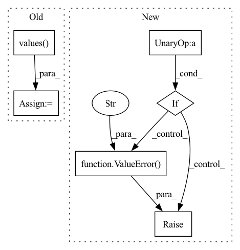

Pattern ID :13922
Before Change
for metric_with_utils in self.__phase2metrics[phase]:
metric_value = metric_with_utils.compute()
if isinstance(metric_value, dict):
metric_value = list(metric_value.values() )[0]
if len(metric_value.shape) != 0:
raise ValueError(f"{metric_with_utils.log_name} must compute float value, "After Change
is_number = isinstance(metric_value, numbers.Number)
// If not numeric type.
if not (is_number or isinstance(metric_value, Tensor) or isinstance(metric_value, np.ndarray)) :
raise ValueError(f"{metric_with_utils.log_name} must compute number value, "
f"not numpy array element with dtype {metric_value.dtype}." )
metric_key = f"{phase.value}/{metric_with_utils.log_name}"
log[metric_key] = metric_value
In pattern: SUPERPATTERN
Frequency: 4
Non-data size: 6
Instances Fragment ID: 46235952
Project Name: eora-ai/torchok
Commit Name: d8c48d17577a0f16e28022ba1ead8e9e07e7f62f
Time: 2022-05-05
Author: rashit.bayazitov.1995@gmail.com
File Name: src/metrics/metric_manager.py
M Class Name: MetricManager
N Class Name: MetricManager
M Method Name: on_epoch_end(2)
N Method Name: on_epoch_end(2)
M Parent Class: nn.Module
N Parent Class: nn.Module
M File Name: src/metrics/metric_manager.py
N File Name: src/metrics/metric_manager.py
M Start Line: 170
M End Line: 180
N Start Line: 165
N End Line: 187
Before Change
// TODO: filter inputs by valid name
// inputs = {k: v for k, v in inputs.items() if k in self.input_names}
// temporary fix: reorder by expected QA input order
inps = list(inputs.values() )
inps[1], inps[2] = inps[2], inps[1]
if self.engine_type == ORT_ENGINE:After Change
self._forward(inputs)
def _forward(self, inputs):
if not all(name in inputs for name in self.input_names) :
raise ValueError(
f"pipeline expected arrays with names {self.input_names}, received "
f"inputs: {list(inputs.keys())}"
)
if self.engine_type == ORT_ENGINE:
inputs = {k: v for k, v in inputs.items() if k in self.input_names}
return self.model.run(None, inputs) Fragment ID: 46235955
Project Name: neuralmagic/deepsparse
Commit Name: 845837b0c5f2ee40d4c8a9d1950ce47b7dafadd6
Time: 2021-07-19
Author: bfineran@users.noreply.github.com
File Name: examples/huggingface-transformers/pipelines.py
M Class Name: Pipeline
N Class Name: Pipeline
M Method Name: _forward(2)
N Method Name: _forward(2)
M Parent Class: _ScikitCompat
N Parent Class: _ScikitCompat
M File Name: examples/huggingface-transformers/pipelines.py
N File Name: examples/huggingface-transformers/pipelines.py
M Start Line: 254
M End Line: 261
N Start Line: 250
N End Line: 260
Before Change
return len(self.images)
def load_dataset(self, root_dir):
self.class_values = CLASSES_TO_IDX.values()
if not self.class_values:
raise ValueError(
After Change
return len(self.images)
def load_dataset(self, root_dir):
if not self.labels :
raise ValueError(
"You need to provide the list of labels for the dataset"
)
masks_for_image = []
for root, _, fnames in sorted(os.walk(root_dir)):
Fragment ID: 46235954
Project Name: biasvariancelabs/aitlas
Commit Name: 01d0b83b3012e77cab1fddc253cc0887127af1b9
Time: 2021-03-11
Author: ivica.dimitrovski@gmail.com
File Name: aitlas/datasets/chactun.py
M Class Name: ChactunDataset
N Class Name: ChactunDataset
M Method Name: load_dataset(2)
N Method Name: load_dataset(2)
M Parent Class: BaseDataset
N Parent Class: BaseDataset
M File Name: aitlas/datasets/chactun.py
N File Name: aitlas/datasets/chactun.py
M Start Line: 38
M End Line: 45
N Start Line: 44
N End Line: 49
Before Change
return len(self.images)
def load_dataset(self, root_dir):
self.class_values = CLASSES_TO_IDX.values()
if not self.class_values:
raise ValueError(
After Change
return len(self.images)
def load_dataset(self, root_dir):
if not self.labels :
raise ValueError(
"You need to provide the list of labels for the dataset"
)
ids = os.listdir(os.path.join(root_dir, "images"))
self.images = [os.path.join(root_dir, "images", image_id) for image_id in ids]
Fragment ID: 46235958
Project Name: biasvariancelabs/aitlas
Commit Name: 01d0b83b3012e77cab1fddc253cc0887127af1b9
Time: 2021-03-11
Author: ivica.dimitrovski@gmail.com
File Name: aitlas/datasets/camvid.py
M Class Name: CamVidDataset
N Class Name: CamVidDataset
M Method Name: load_dataset(2)
N Method Name: load_dataset(2)
M Parent Class: BaseDataset
N Parent Class: BaseDataset
M File Name: aitlas/datasets/camvid.py
N File Name: aitlas/datasets/camvid.py
M Start Line: 38
M End Line: 45
N Start Line: 43
N End Line: 48